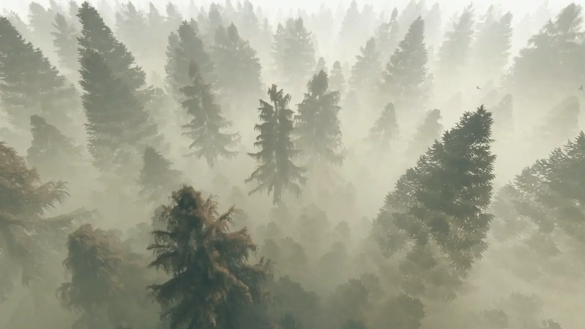
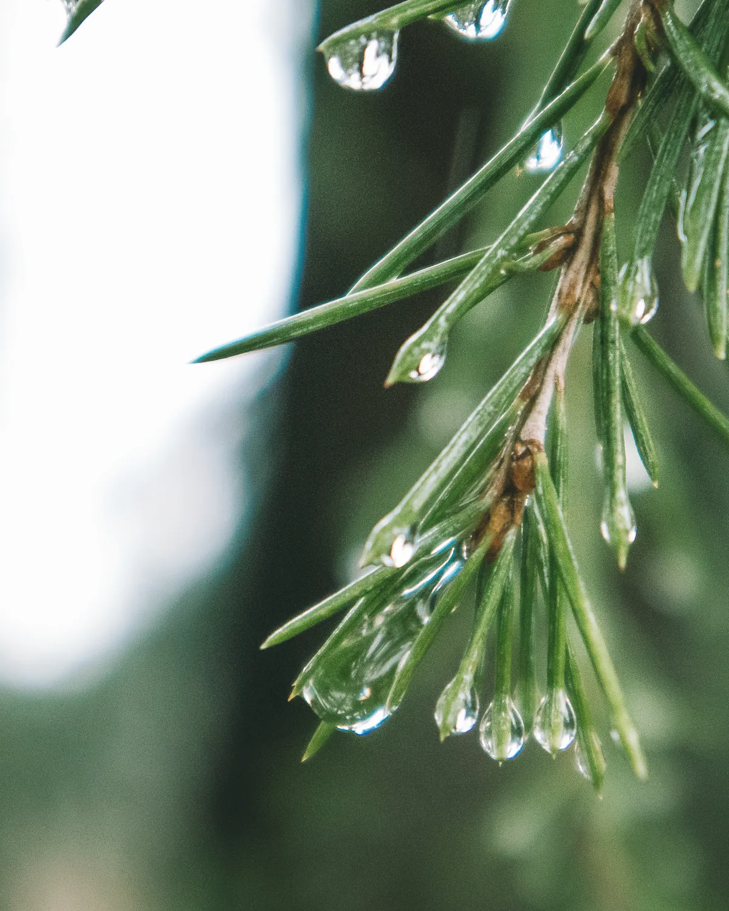
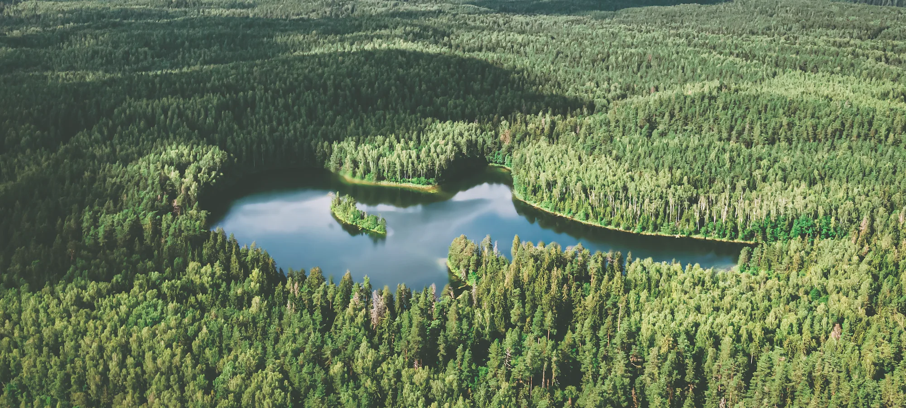
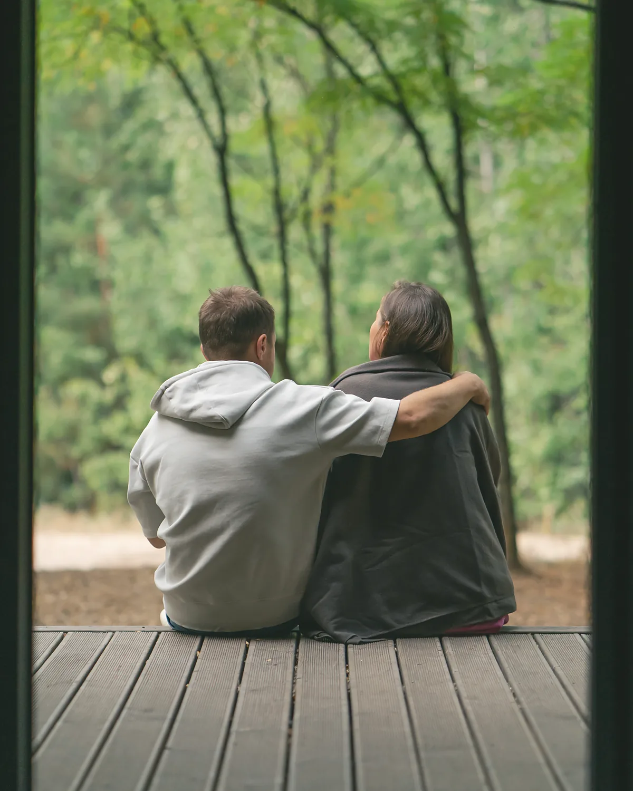

The loch at seven.Loch Ardvren is 3.1 miles long and 41 metres deep. Six of the Phase 2 plots run to its waterline; every plot shares 900 metres of common shore, the jetty and the boathouse.
640 acres of Caledonian pine.In one ownership since 1911, walked by the same forester for twenty-two years. Forty heritable plots, with covenants that keep the trees.
The Pine, £298,000 turnkey.Eighty-six square metres, two bedrooms, and a larch deck the length of the house. Nine months from the day your plot completes.
Winter, heated for £62 a month.Triple glazing, 300 millimetres of wood fibre and an air-source heat pump in every lodge. The loch freezes at the edges; the road does not close.
A heritable plot of between 1,150 and 2,900 square metres, registered in your name. The trees on it. The shore below it, to the waterline, where it has one. A tarmac spur, three-phase power, 900 Mb fibre and private water to the boundary, and consent in principle for one dwelling of up to 140 square metres.
640acres of Caledonian pine and birch, in one ownership since 1911
2.4miles of loch shore, 900 metres of it common to every owner
24plots in Phase 2, fourteen of them still available
Ours, always
The estate keeps the roads, the water treatment, the jetty, the boathouse and the forester. It keeps the rules too: no fences between plots, no exterior light warmer than 2,700 kelvin, larch or charred larch on every wall, one dwelling to a plot, and no felling of anything over thirty centimetres round without the forester’s say-so. The service charge is £1,140 a year.

The estate, in motion
Flown in one week of September: the pines from above at first light, the fog lifting off the loch, and the south shore where Phase 2 begins.
Three lodges, drawn for these plots
Each is built by the estate’s own contractor in Scottish larch, on a floor plan sized to its plot type, and handed over finished: foundations, frame, triple glazing, an air-source heat pump, kitchen, bathrooms and the deck. Nine months from the day your plot completes.
Natural larch as standard; charred larch, a wood-burning stove, a longer deck, a boot room, solar and a shore sauna are the options.Price your lodge

Three hundred years, kept
The trees
Ardvren’s oldest pines were seedlings around 1720. Every plot carries a covenant on its trees: nothing over thirty centimetres round comes down without the estate’s consent, and the estate forester marks what may. Building platforms were set by walking each plot with him before it was drawn. The trees will outlast the lodges. That is the point of them.
The shore
Lochside plots run to the waterline and come with a mooring on the estate jetty. Woodland and ridge plots share 900 metres of common shore, the boathouse with its four rowing boats, and the swimming ladder at the point. Loch Ardvren is 3.1 miles long, 41 metres deep and, in August, a bearable 15 degrees.

Phase 2 · released 12 September 2026Twenty-four plots, three kinds of ground
Eight months from the estate’s own album. The stags are on the ridge in October, the swimming ladder goes back in the water in May, and the fire on the point is lit for the longest day.

Phase 1, occupied
Sixteen lodges, every one of them lived in
“We bought plot 9 in the rain, which Fiona said was the honest way to see it. Eighteen months on, the rain is still the best of it.”
Anna and Douglas Craig · The Pine on plot 9 · owners since May 2025
Come and walk it
Saturdays10.00 – 16.00
Wednesdays13.00 – 17.00
Office, Mon – Fri9.00 – 17.30
Viewings are by appointment and take about two hours: the plots you have asked for, one of the Phase 1 lodges, and the shore. Wear boots.